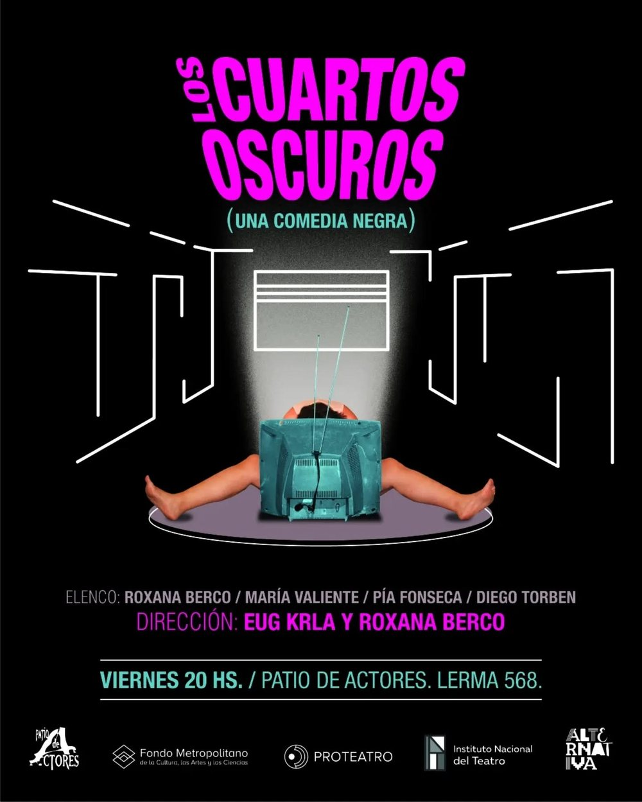
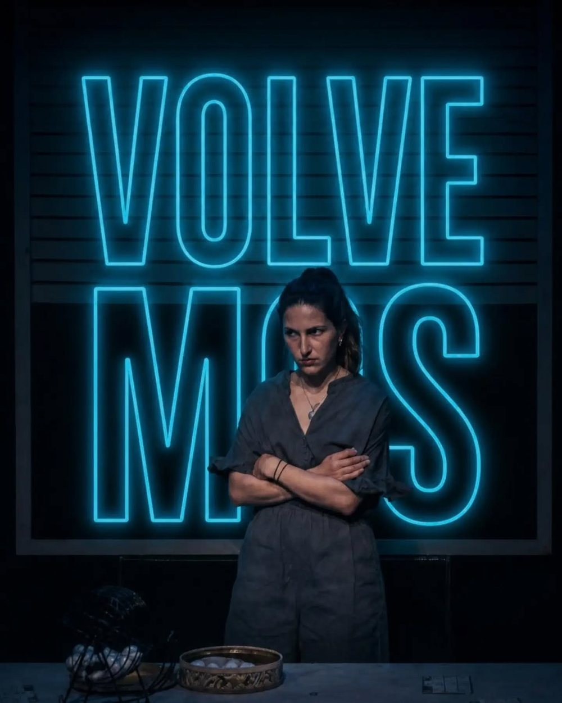

En cartel · Una comedia negra
Los Cuartos Oscuros
Tras una elección nacional descorazonadora, una actriz sin escenario les deja a sus hijas una nota en la heladera: «despiértenme cuando termine este mandato». Tres mujeres de un mismo linaje se repliegan frente a un mundo que ya no pueden reconocer, entre la paranoia, el deseo y el desconcierto.
- Viernes 20 hs
- Teatro Patio de Actores · Lerma 568
13viernes · nov
20viernes · nov
27viernes · nov
Comprar entradas
Venta online en Alternativa Teatral · últimas funciones del año
Lo que dice el público
Opiniones de espectadores en Alternativa Teatral.
«Es una obra muy inteligente, de humor negro, que logra hacer reír con lo que cotidianamente nos hace llorar. Las actuaciones son excelentes. ¡No se la pierdan!»
«Una obra divertida e ingeniosa. Una sale modificada después de verla. Me encantó, la súper recomiendo.»
«Una obra que sorprende, moviliza fibras íntimas, emociones vinculadas con nuestra familia, nuestra historia, nuestro país. Excelentes actuaciones.»
«Catártica obra que te hace reír en estos tiempos donde es necesario. Hermosa puesta con brillantes actuaciones y dirección. La escenografía, increíble.»
«Una puesta sencilla, bella y dinámica. Todo el tiempo pasan cosas. Un texto sólido y entretenido que provoca risas y reflexiones.»
«Amo el teatro de trinchera: cruel, tierno y necesario. La propuesta es de lo mejor que hay en cartel en la actualidad.»
Todas las opiniones en alternativateatral.com.
La obra
- Dramaturgia
- Roxana Berco
- Actúan
- Roxana Berco, Pía Fonseca, María Valiente y Diego Torben
- Dirección
- Eug Krla y Roxana Berco
Quedan tres funciones este año.
Viernes 13, 20 y 27 de noviembre · 20 hs · Teatro Patio de Actores, Lerma 568.
Comprar entradas